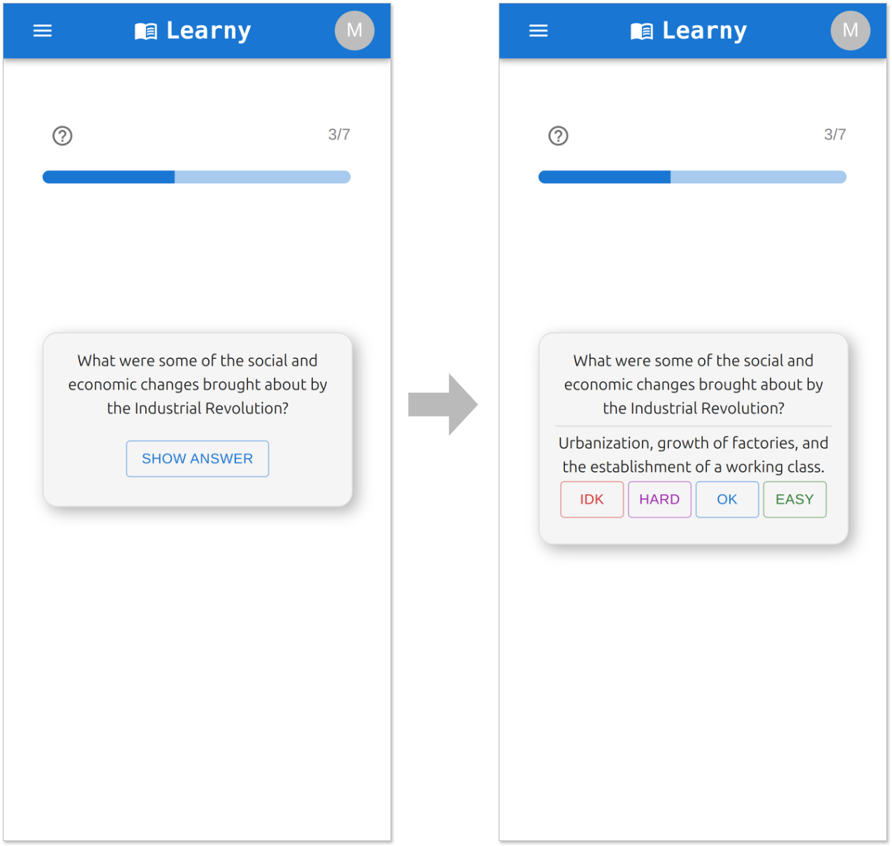
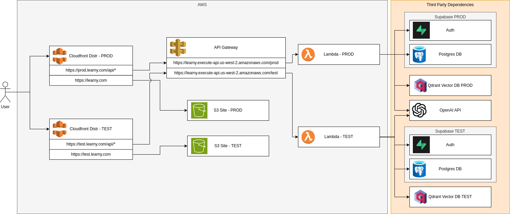
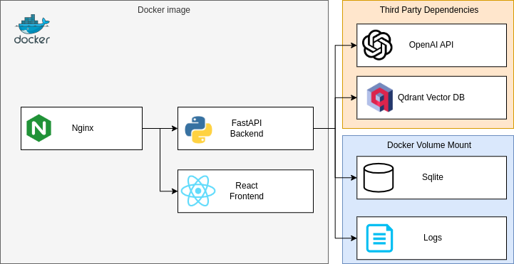

Learny
I am a very curious person. Since ChatGPT came out I’ve loved asking it questions about chemistry and history and getting instant answers. It feels like going to the office hours of a brilliant professor and picking their brain endlessly.
Since I have a lot of teachers in my family I know there's room for improvement in our education systems today, and playing with LLMs made it clear to me that technology could help more now than ever. I made Learny to explore how LLMs can be used to enhance my own learning, lean into my own curiosity, and share it with others so they could benefit too.
Capabilities
ChatThe most obvious feature in the app is a typical chat interface, complete with previous chats in the side pane if you want to go back and review. A curious user can ask questions on this screen like you would with any AI.
Since I like to learn with flashcards, I built in a wizard which can turn any response from the AI into questions and answers for study (it's the icon of cards with a plus sign in the AI chat bubble).
There’s several other fancy features in the AI menu on the right, let’s have a look.
Suggest Questions
Beyond answering questions directly, I've found LLM's are also good at suggesting things for you to ask. To do this the user just needs to click on the “Inspire” button from the AI menu, type in the topic they’re interested in, and click Submit. Learny then displays several buttons with relevant rabbit holes we can explore. Here's what the AI suggested when the Inpsire feature was used with "Industrial Revolution":
See? Those were already more interesting than the first question I asked! Clicking any of the suggestions will send the question to the AI and bring back the answer. Just like any AI response, we can click the flashcard button to generate flashcards for later study.
RAG
Attentive readers might point out that LLMs only know about information they’ve been trained on. What if we want to talk to Learny about something that it has never seen? That’s a valid use case, and it’s for that reason I wanted to include Retrieval Augmented Generation (RAG) in the project.
There’s dozens of great writeups on how RAG works, and you should go look into those if you want the nitty gritty details. Here I'll focus on the high level concepts and how I use them in Learny:
- Users upload their documents which are then split into chunks and stored in a vector database.
- Users then toggle on a DocChat mode from the AI menu, which will tell Learny to leverage user documents when answering questions.
- Learny's answers will then incorporate relevant parts of user documents (as well as citing sources).
- Cosine similarity: Use an encoding model to mathematically represent query and document chunks & find chunks closest to user query.
- BM25: Score document chunk relevance based on keyword frequency, return most relevant.
- Hybrid search: Combine findings from the two approaches above to get a blended result set.
- Reranking: Use another model to sort the findings before giving them to LLM when generating answer.
Some of my friends in aviation have found this very helpful since they can “talk” to their documents via the AI (while also seeing which page of the source document answered their question). Now the AI Tutor can work with you on any information that you upload!
Outlines
As a visual learner, I badly wanted to have cool dynamically generated diagrams with lines and colors. It seemed engaging, pretty, and fun to build. There’s some cool libraries that let you draw connected boxes, add animations, and show relationships…but in my experiments the AI stayed too high level (vague, unhelpful) or generated diagrams with 1000 boxes (impossible to read). These diagrams were also unusable on small screens. I knew I’d be using this from my phone primarily, so that was a deal breaker.
Once I had cut emotional ties with the cool but impractical idea, the pragmatic alternative visual aid was obvious: outlines. The AI breaks a topic into its primary facets, and then creates an itemized list for each. These lists can then be rendered as cards which are much more mobile friendly.
Here’s what it looks like if someone uses the outline feature from the AI menu and types in "history of the USSR":
From here the user has two easy paths to drill down further:
- Click an underlined item to dive into that item.
- Click the question mark in a box to get a more info about everything in the card.
Timelines
Another visual learning aid I wanted to include was auto generated timelines. Timelines offer a clear, graphical representation that can make complex data more accessible than mere numerical analysis alone. For instance:
Those empire names might ring a bell, but did you know the Incan Empire was around for so much less time than the Byzantine empire? Timelines can add clarity on many concepts as well as making them easier to remember.
This feature works similarly to the outline feature:
- The user accesses it from the AI menu in the bottom right and enters a topic into the dialog.
- Next Learny will generate the relevant events and start/end dates for each.
- The frontend uses this data to create a chart for the user.
Spaced Repetition Flashcards
Most features so far have been about information discovery, but what about information mastery and retention? That’s where spaced repetition flashcards come in - if you’ve used Anki before it’s the same idea. It boils down to “hard flashcards are asked again soon, easy ones aren’t.” This adaptive and personalized approach helps to efficiently reinforce knowledge just as it begins to fade, maximizing learning and minimizing time spent on material already mastered.
Remember the “create flashcard” wizard we saw earlier? After saving the flashcard, a user might follow this workflow:
- User goes to the Flashcards screen, selects a tag to study such as "Industrial Revolution" and clicks “Study”.
- The user ranks the difficulty of each card after answering.
- The system will then compute when to next show the card accordingly.

Spaced repetition has been very helpful for me to keep a large amount of information in working memory without having to study for hours everyday. Once mastered you might not see a card again for weeks or months, although if you start missing it that time will shorten accordingly.
Architecture
Now you know what Learny can do, but I'd also like to share how it's designed! I had several goals in mind with the architecture of Learny:- Separate test/prod environments using Infrastructure as Code for consistency
- Cost effective relational database
- Easy maintenance and scalability
- I didn't want to pay for relational DB, vector DB, or servers when not in use (side project traffic often sporadic and bursty)
- Maximize use of "off the shelf" authentication code (password reset, UI components, etc) so I didn't have to code it all by hand
So what design came out of these requirements? I'm glad you asked! 
| Component | Rationale |
|---|---|
| React Frontend S3 Site | React is my strongsuit for frontend and S3 sites are super easy to deploy + integrate with Cloudfront for caching |
| FastAPI Backend using AWS Lambda + API Gateway | Only charged for what I use, ultra scalable, and no servers to manage |
| Supabase Authentication | Excellent user management + and their sign up/login React components saved a lot of time |
| Supabase Postgres | The free tier is quite generous, meaning managed DB would cost nothing. |
| Qdrant Vector DB | Another managed service with generous free tier, can pay for more capacity or self host later if needed |
| OpenAI API | In high traffic apps it can make sense to self host an open source LLM, but Learny is not at that point yet |
| Terraform to stand up the infra | Quick to put together, consistency across environments, self documenting |
I really like that I can have a webapp side project for just a few dollars a month, and there are very simple modifications I can make if more performance/control is needed:
- Supabase Postgres -> RDS so data is co-located with backend
- Dockerized FastAPI Lambda -> ECS to avoid cold starts
- Self hosting Qdrant or an open source LLM if that becomes more cost effective

My priority was making it easy to run out of the box, so there's a few key differences:
- Python base image with compiled React frontend files included
- Nginx server takes the place of CloudFront, directs requests to frontend or backend based on path
- SQLite DB for simplicity instead running a Postgres server
- Log files and SQLite live in a mounted volume so they persist
- API keys for Qdrant and OpenAI configured via env vars
Next steps
Tutor ModesIt seems useful to have user configurable "modes" for the AI, such as "explain like I'm 5" or "explain using analogies to [insert domain user understands here]." That way users could quickly switch between modes to get the explanation that makes the most sense to them based on the topic of study. This would be a simple change where the user could define personas which get injected into requests made to the AI, and they can toggle between them in the chat interface.
Quizzes
The intent here is to be able to track the mastery of a topic over time in a consistent way. Quizzes could be generated dynamically or simply come from existing flashcards, but scores would be saved and users could revisit them whenever they like.
Team/group support
So far Learny is very much a solo endeavor, but it would be cool to have a team or group mode where users could share flashcards, outlines, and timelines. This would be especially useful for study groups or teams working on a project together, or a class where progress needs to be measured in a standardized way.